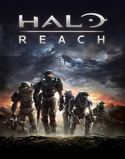
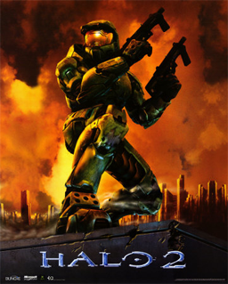
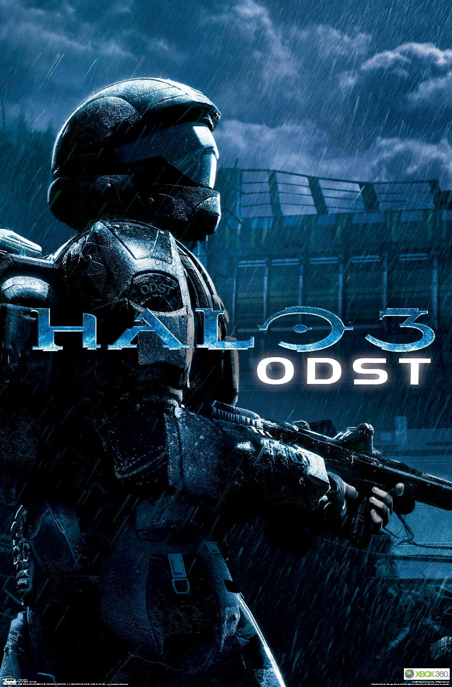
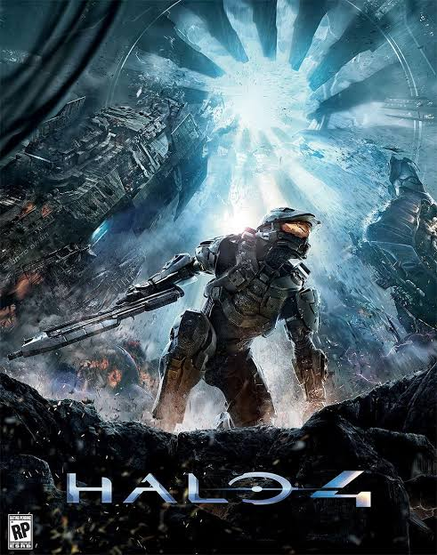

Review of Halo Master Chief Collection Games
Halo: Reach

Of the games in the collection this one easily had the most breadth taking cut scenes. The gameplay itself wasn't revolutionary or anything (which I don't mind) considering it's late realease date; but I think it did what it needed to do. That being laying out the lore of the Halo universe before combat evolved. The most memorable scene for me was in the Tip of The Spear campaign mission.
Halo: Combat Evolved

Bearing in mind this was the first Halo game, I can appreciate it's fundemental simplicity. The plot was suprisingly good. One thing I will say however is that sometimes the missions feel very repetetive. I can't recall which mission it was but one of them had me crossing over the same bridge like 4 times. Technically it wasn't the same bridge but the assets were all reused so it looked exactly the same. The introduction of the Halo ring was really cool.
Halo 2

Great great great plot. The cut scenes really helped in getting me invested in it. Admittedly, at times I was lost in the plot because it's quite complex (imo), so I had to keep the fandom page open that had a write up of the plot so that I could follow the cut scenes. This game was a huge improvement from Halo Combat Evolved in literally every way.
Halo 3 ODST

At first I was reluctant to play it because I heard it was only a side story that ran parallel to the timeline of Halo 2. I gave it a go anyways because I wanted to clear up some confusions I had on the Covenant invasion of Mombasa. As I played on I warmed up to the game a lot. I like how they didn't try to do too much with it, throughout the game you don't travel far, you mosts just roam around the city scouting out for lost members of your batallion. It sounds lame, but the story, dark atmophere, AND ABSOLUTELY PHENOMINAL soundtrack gave the game a vibe unique to other Halo games. I also thought the map, intel tabs were dumb at first, but I later found them to be increadibly useful, I especially liked how you could simply use the wsad keys to move the map, it was a well thought out design. Honestly nothing bad to say about this game.
Halo 3

This game introduced to us The Ark. I thought it was a really cool way to rationalize how the forerunners controlled all the rings. It continued the plot well; but to me it wasn't an improvement to Halo 2 in any regard - unless were talking about graphics (I played Halo 2 anniversary so the graphics were essentially the same to me). Overall, can't complain, it pretty much was just a continuation of Halo 2 which was already a great game.
Halo 4
